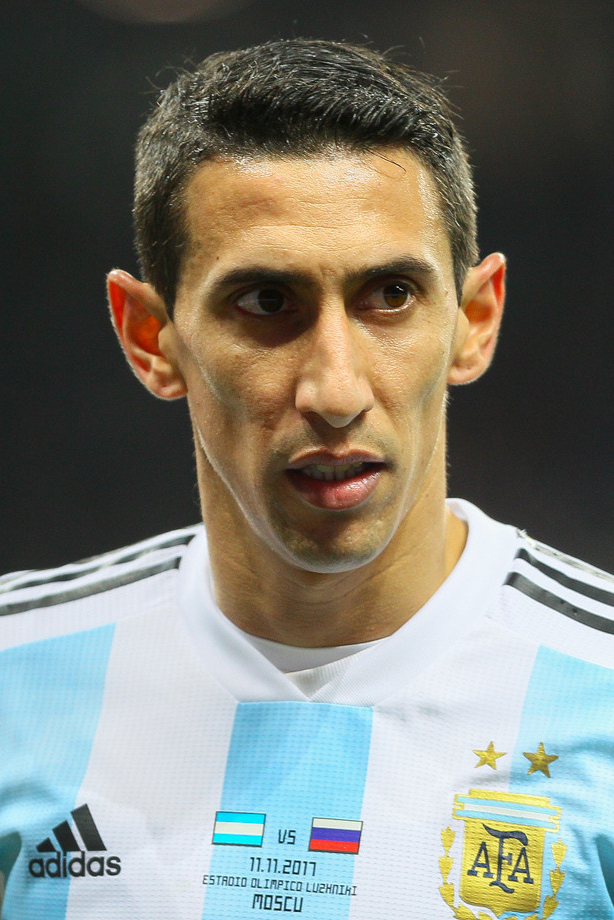

Vamos Argentina!!!
Página Principal
Angel Di Maria

Nombre completo:
Ángel Fabián Di María
Nacionalidad:
Argentina.
Nacimiento:
Rosario, Santa Fe 14 de febrero de 1988 (34 años)
Altura:
1.78m.
Peso:
75kg.
Posicion:
Extremo derecho Centrocampista.
Club:
Juventus de Turín.